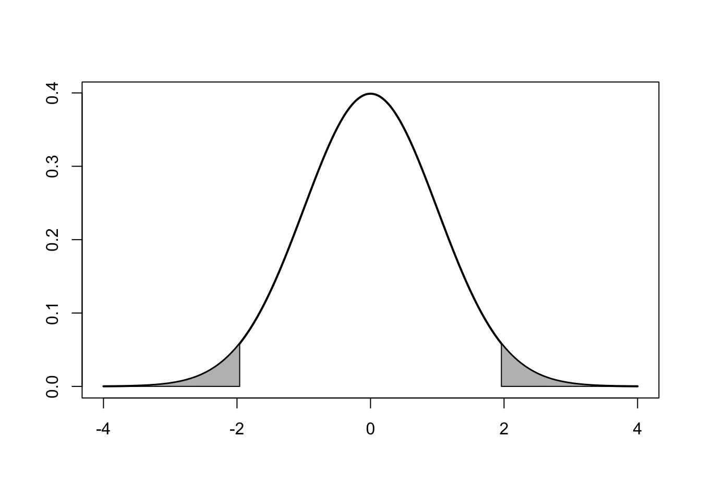
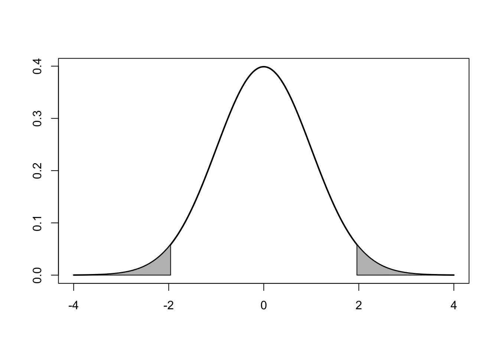
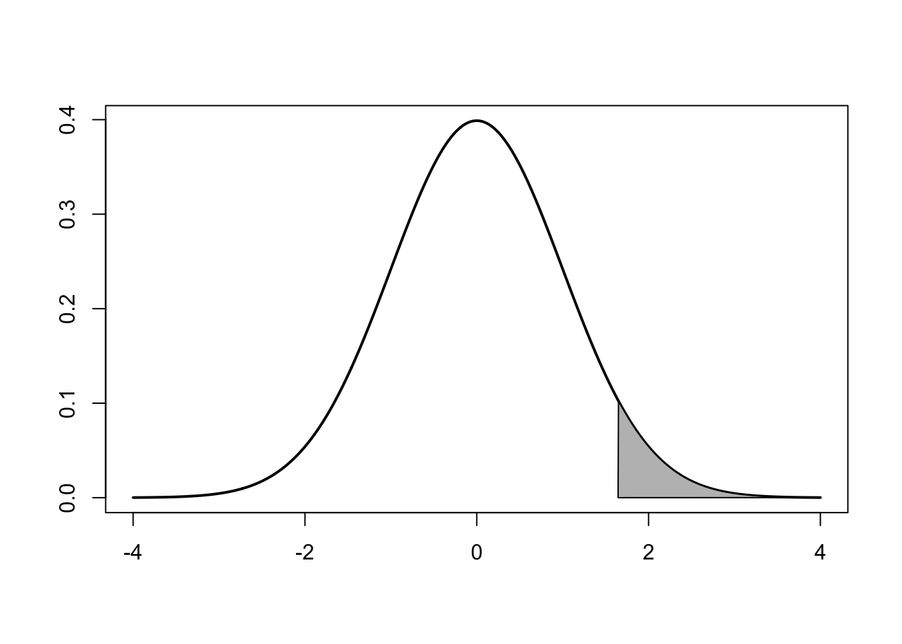
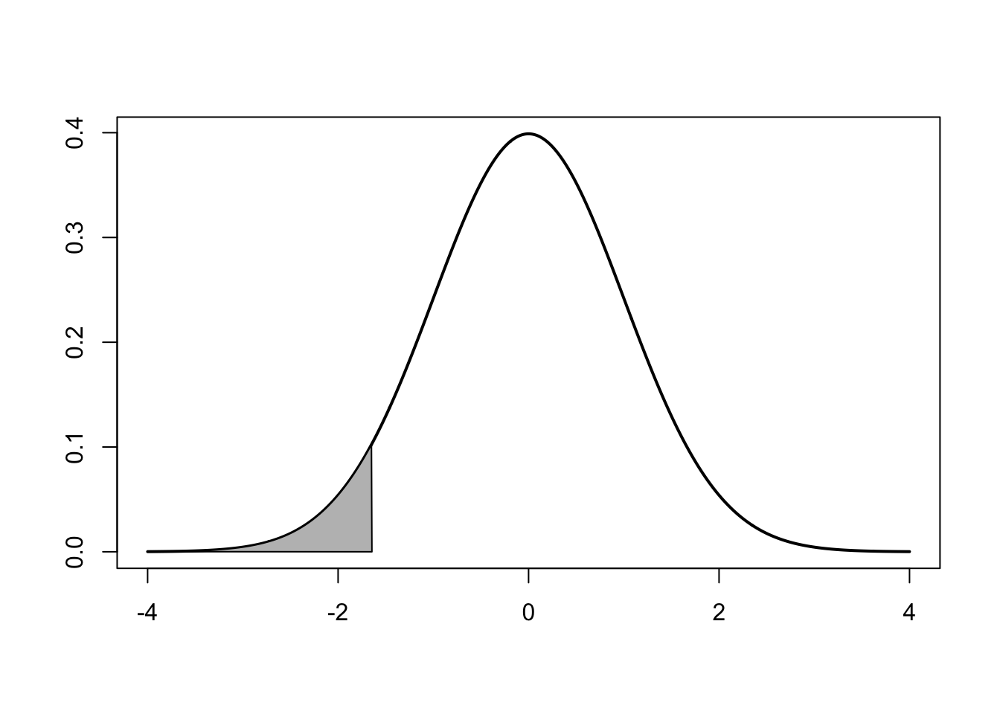
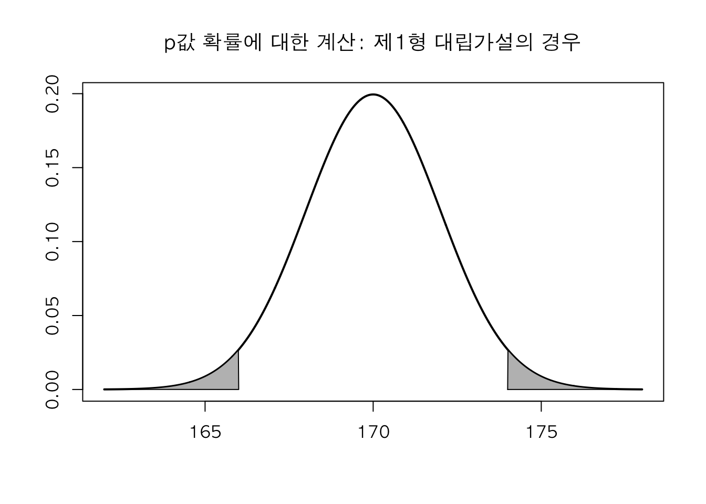
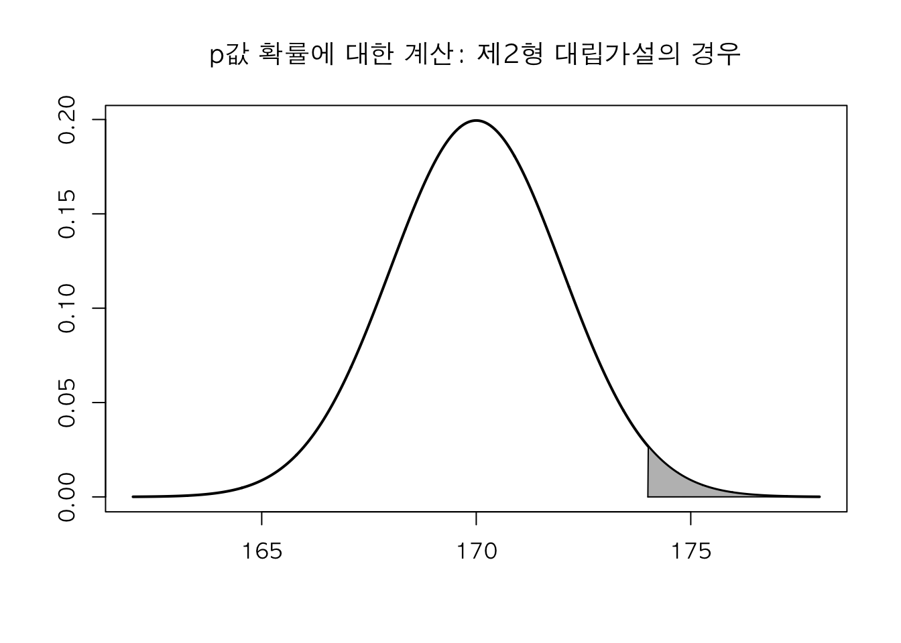
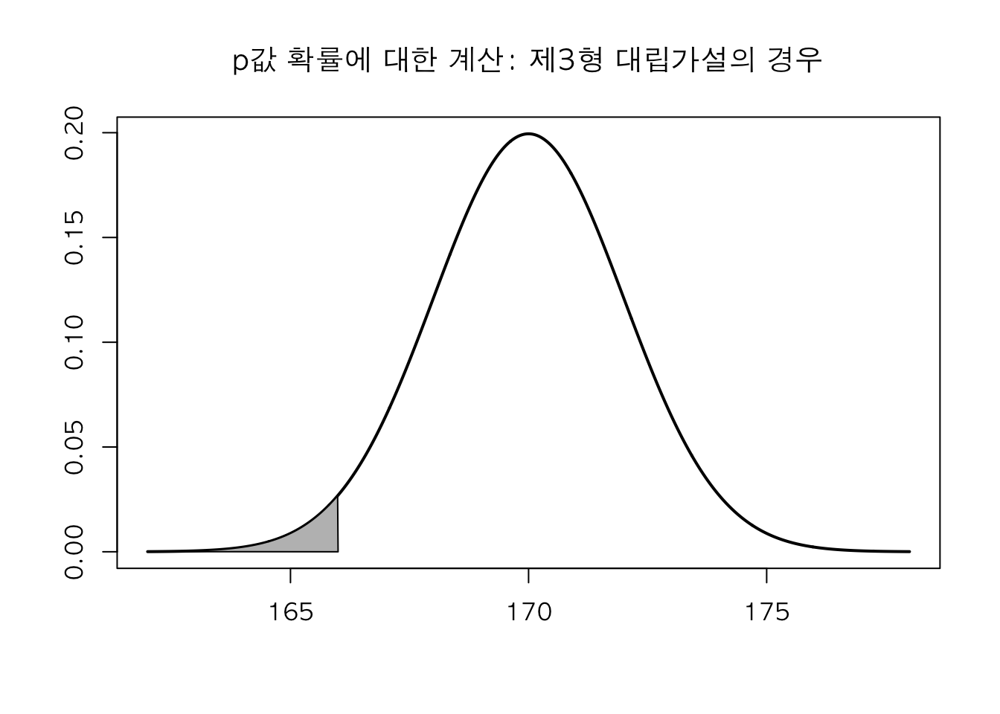

x=seq(-4,4,0.01); y=dnorm(x); x1=qnorm(0.025); x2=qnorm(0.975)
plot(x, y, xlab='', type='l', ylab='', lwd=2, main='')
polygon(c(x2,x[(x>x2)]), c(0,y[(x>x2)]), col="gray")
polygon(c(x[(x<x1)],x1), c(y[(x<x1)],0), col="gray")
통계적 가설검정은 귀무가설과 대립가설을 설정하고 어느 가설이 합당한지를 판단하는 의사결정 방법이다.
그런, 일반적인 생각과는 달리 두 개의 가설을 공정하게 놓고 판단하는 것이 아니라, 귀무가설에 강한 편향적 선호도를 주고 이에 대한 반대 증거를 찾는 과정으로 진행된다.
현재 그대로의 상태를 나타내는 status quo에 귀무가설을 설정하여 편향적 선호도를 부여한다.
귀무가설을 기각할만한 뚜렷한 증거가 없으면, 가급적 귀무가설을 유지하려고 노력한다.
귀무가설을 기각할만한 충분한 증거를 확인하지 못하였다는 의미는 귀무가설이 참이라는 증거를 확보했다는 의미가 아니다.
때문에 귀무가설을 채택한다라는 말을 사용하면 안된다.
반드시 ’귀무가설을 기각할 수 없다 cant reject H0’라고 표현해야 한다.
가설을 세우기 이전에 반드시 모수에 대한 정의가 이뤄져야 한다.
귀무가설은 status quo 면서, 모수가 구체적으로 설정될 수 있는 문장이어야 한다.
유의수준은 우리가 심각하게 생각하는 경우로, 제 1종 오류를 허용하는 한계치를 의미한다.
우리는 귀무가설에 더 많은 편향적 선호를 주면서 귀무가설을 함부로 기각하지 못하도록 설정할 수 있다.
유의수준을 5%에서 1%로 낮추는 것이 귀무가설에 더 많은 편향적 선호를 주는 것이다.
그러나 유의수준을 낮추게 되면 제2종오류에 대한 확률이 증가하는 문제점이 발생한다.
유의수준은 오류에 의한 손실을 고려하여 정해질 수 있다.
예를 들어 은행의 대출심사 과정을 생각해보자.
은행은 두 가지 오류를 범할 수 있다.
1번 대출원금을 받지 못하는 오류가 이자를 받지 못하는 오류보다 훨씬 심각하므로 첫번째 오류를 1종 오류로 설정하는 것이 타당하다.
그러므로 귀무가설은 ‘신청자는 대출금을 갚지 않을 것이다.’ 라고 설정하는 것이 타당하다.
만약 대출금액이 10억,100억으로 매우 크다면 귀무가설에 강한 편향적 선호도를 주는 것이 옳다.
즉, 유의수준을 매우 낮게 가져가야 한다.
그러나 100만원 대출 신청의 경우엔 유의수준을 조금 높게 가져가도 괜찮을 것이다.
이렇게 귀무가설에 대한 편향적 선호도 혹은 제 1종 오류에 대한 심각성은 유의수준으로 통제한다.
검정통계량을 결정하고 이에 대한 표본 분포를 찾는다.
표본평균\(\bar{X_n}\)이거나 표본평균을 표준화한 확률변수 \(Z\)가 된다.
과자봉지에 400g의 내용물이 표시되어 있는데, 최근 과자의 양이 적어졌다고 불평하는 소비자들이 많아졌다. 이를 확인하기 위하여 해당 회사는 과자봉지에 대한 내용물 무게를 조사하여 일부 소비자가 재기한 불평에 대한 근거가 있는지를 판단하고자 한다. 이 문제에 대하여 귀무가설과 대립가설을 어떻게 설정할 것인지에 대하여 논의하시오
검정통계량이 기각역에 속하는 확률은 제1종오류에 대한 최대 허용확률인 유의수준과 같거나 작아야 한다.
[그림 10-1] 272p
제1형 대립가설(양측검정)에 대한 기각역
x=seq(-4,4,0.01); y=dnorm(x); x1=qnorm(0.025); x2=qnorm(0.975)
plot(x, y, xlab='', type='l', ylab='', lwd=2, main='')
polygon(c(x2,x[(x>x2)]), c(0,y[(x>x2)]), col="gray")
polygon(c(x[(x<x1)],x1), c(y[(x<x1)],0), col="gray")
제2형 대립가설(우측검정)에 대한 기각역
x2=qnorm(0.95)
plot(x, y, xlab='', type='l', ylab='', lwd=2, main='')
polygon(c(x2,x[(x>x2)]), c(0,y[(x>x2)]), col="gray")
제3형 대립가설(좌측검정)에 대한 기각역
x1=qnorm(0.05)
plot(x, y, xlab='', type='l', ylab='', lwd=2, main='')
polygon(c(x[(x<x1)],x1), c(y[(x<x1)],0), col="gray")
qnorm(0.05, 170, 10/sqrt(25))[1] 166.7103qnorm(0.05)[1] -1.644854p값은 통계적 유의성(statistically significance)를 나타내는 수치로 검정 통계량 값을 기반으로 계산된 귀무가설을 기각할 수 있는 최소의 유의수준이다.
여기서 통계적 유의성은 데이터가 귀무가설로 부터 얼마만큼 떨어져 있는지에 대한 정도를 나타낸다.
즉, 귀무가설이 참인 상태에서 발생한 데이터라고 판단하기에는 확률적으로 너무 낮은 수치인지를 표현하는 개념이다.
pnorm(166, 170, 10/sqrt(25))[1] 0.02275013[그림 10-1] 276p
par(family="AppleGothic")
x=seq(162,178,0.01); y=dnorm(x, 170, 2); x1=166; x2=174;
plot(x, y, xlab='', type='l', ylab='', lwd=2,
main='p값 확률에 대한 계산: 제1형 대립가설의 경우')
polygon(c(x2,x[(x>x2)]), c(0,y[(x>x2)]), col="gray")
polygon(c(x[(x<x1)],x1), c(y[(x<x1)],0), col="gray")
par(family="AppleGothic")
plot(x, y, xlab='', type='l', ylab='', lwd=2, main='p값 확률에 대한 계산: 제2형 대립가설의 경우')
polygon(c(x2,x[(x>x2)]), c(0,y[(x>x2)]), col="gray")
par(family="AppleGothic")
plot(x, y, xlab='', type='l', ylab='', lwd=2, main='p값 확률에 대한 계산: 제3형 대립가설의 경우')
polygon(c(x[(x<x1)],x1), c(y[(x<x1)],0), col="gray")
A 회사는 자신들이 출시한 건강음료가 평균 7.7ml 비타민C 원액을 포함하고 있다고 광고하였다. 하지만 소비자 단체에서는 비타민C 원액이 함량미달이므로 과대광고를 조사해 달라는 요청이 들어왔다.
공정거래위원회는 이러한 소비자 단체의 주장이 타당한지를 확인하기 위하여 10개 제품을 수집하여 조사한 결과 표본평균 7.548ml, 표본표준편차는 0.21ml로 나타났다. 이에 대한 자료는 다음과 같다.
7.35, 7.39, 7.87, 7.41, 7.42, 7.69, 7.82, 7.75, 7.32, 7.46
소비자 단체의 주장에 대하여 유의수준 5%에서 가설검정을 진행하여라.
표본크기가 작은 경우에 대한 모평균검정에 사용
모분산, 모표준편차를 모르는 경우
스튜던트화된 표본평균 \(T\)는 자유도 n-1인 t분포를 따른다.
평균 \(\mu\), 분산 \(\sigma^2\)인 정규분포를 갖는 모집단으로 부터 표본크기 \(n\)인 무작위 표본에 대한 스튜던트화된 표본평균 \(T\)의 분포는 자유도가 \(n-1\)인 t-분포를 따른다.
\[T= \frac{\bar{X_n}-\mu}{S/\sqrt{n}}\sim t(n-1)\]
표본크기가 커지면\((n\geq30)\) 스튜던트화된 표본평균 \(T\)는 모집단 분포에 관계없이 중심극한정리에 의하여 표준정규분포로 근사하게 된다.
x = c(7.35, 7.39, 7.87, 7.41, 7.42, 7.69, 7.82, 7.75, 7.32, 7.46)
t.test(x, alternative="less",mu=7.7)
One Sample t-test
data: x
t = -2.2858, df = 9, p-value = 0.02405
alternative hypothesis: true mean is less than 7.7
95 percent confidence interval:
-Inf 7.669896
sample estimates:
mean of x
7.548 p값은 0.02405 유의수준 5%에서 기각할 수 있다.
표본크기가 큰 경우에 대한 모평균 검정 - 표준정규분포로 근사시킬 수 있다
우리나라 중학교 1학년 학생의 평균키는 159cm로 알려져 있다. 서울지역의 중학교 1학년 학생 50명 을 대상으로 조사한 결과 표본평균은 160cm, 표본분산은 6cm으로 나타났다. 서울지역 중학교 1학년 학생의 평균키와 우리나라 중학교 1학년 학생의 평균키 차이가 있는지 가설검정을 진행하여라.
(5% 유의수준 설정)
H0 : mu = 159
(mu = 중학교 1학년 학생의 평균키)
H1 : mu \(\neq\) 159 > 제1형 대립가설
2*(1-pnorm(160,159,sqrt(6/50)))[1] 0.003892417p값이 유의수준(5%)이하이기 때문에 귀무가설을 기각할 수 있다.
두 모집단의 모평균 \(\mu_1\) 과 \(\mu2\)가 같은지에 대한 가설검정을 한다.
귀무가설은 \(\mu_1 = \mu2\)이고 이를 \(\mu_1-\mu_2=0\) 형태로 바꾸어 검정한다.
대응표본 t-검정(paired- t-test)
대응표본 (paired sample) = 한 사람을 반복적으로 두 번 측정하여 나온 데이터 = 반복측정설계(repeated measure design)의 가장 간단한 형태
한 사람을 반복적으로 측정했기 때문에 두 데이터는 상관관계가 있다.
대응 표본으로 부터 새롭게 구성된 확률변수 \(D_i = X_i-Y_i\)를 이용하여 모평균에 대한 t-검정을 진행하는 것을 대응표본 검정(paired t-test)라고 한다.
귀무가설 H0 : 대응 표본 차이(표본 처리 전후 차이) = 0 대립가설 H1 : 대응 표본 차이 >0 or <0 or $neq$0

다이어트 효과에 대해서 관심 있는 건 mu > 0 인 경우일 것이다.
다이어트 이후 몸무게가 줄어드는 것에만 관심있기 때문.
(다이어트 이전 몸무게 - 이후 몸무게 > 0)
때문에 우측검정을 한다.
x = c(81, 72, 90, 87, 110, 102, 66, 73, 83, 84)
y = c(78, 72, 85, 84, 101, 101, 60, 68, 80, 79)
t.test(x, y, paired=TRUE, alternative="greater",mu = 0) # paired = TRUE, # mu = 0 이 default값
Paired t-test
data: x and y
t = 4.899, df = 9, p-value = 0.0004244
alternative hypothesis: true mean difference is greater than 0
95 percent confidence interval:
2.50327 Inf
sample estimates:
mean difference
4 유의 수준 5%로 설정할 경우 p값이 0.042%로 매우 작기 때문에, 귀무가설을 기각한다. 즉, 다이어트에 의한 효과가 존재한다.
paired t-test를 하려면…
인수 : paired = True
우측검정(제 2형 대립가설) 이라면…
인수 : alternative=“greater”
| ## 독립된 두 모집단 가설 검정 |
| 앞에 나온 대응표본은 한 사람을 두 번 측정하여 얻어낸 데이터를 사용하여 데이터간에 상관관계가 있다. 즉, 독립적이지 않다. |
| 그러나, 독립된 두 모집단을 기반으로 분석을 진행할 수도 있다. 이러한 방법을 독립그룹설계(independent group design)라 한다. |
| 독립된 두 모집단에선 한 사람을 반복적으로 측정하지 않는다. |
| 즉, 한쪽 그룹은 처리그룹이 되고, 한쪽 그룹은 대조그룹이 되어, 처리효과를 파악하는 실험설계를 의미한다. |
| ### [예제 8] 독립된 두 모집단 가설 검정 |
| 다음은 뉴욕증권거래소(NYSE; New York Stock Exchange)에서 거래되고 있는 대표적인 24개 컴퓨터관련 기업과 17개 건설 관련 기업에 대한 자기자본이익률(ROE; Return On Equity) 데이터이다. 두 산업에 대한 자기자본이익률 평균에 대한 차이가 있는지를 분산이 같다는 가정하에,유의수준 1%에서 검정하시오. |
| 컴퓨터 관련 산업에 대한 24개 기업 ROE (단위 : %) 22.4 32.4 21.2 36.8 42.2 16.4 15.5 38.8 24.9 26.6 28.5 25.0 21.8 26.5 10.1 14.1 12.5 14.6 30.5 13.0 41.3 40.4 25.5 35.8 |
| 건설 관련 산업에 대한 17개 기업 ROE (단위 : %) 15.7 14.1 12.3 12.1 14.7 10.3 14.3 21.4 15.0 40.8 11.5 13.7 16.9 11.0 8.7 11.8 8.2 8.7 11.8 8.2 |
| (참고: 컴퓨터 산업의 ROE 표본평균은 25.7. 표본분산은 99.15, 건설산업의 ROE 표본평균은 14.853, 표본분산은 54.7264 이다.) |
| ::: {.cell} |
{.r .cell-code} x = c(22.4, 32.4, 21.2, 36.8, 42.2, 16.4, 15.5, 38.8, 24.9, 26.6, 28.5, 25.0, 21.8, 26.5, 10.1, 14.1, 12.5, 14.6, 30.5, 13.0, 41.3, 40.4, 25.5, 35.8) y = c(15.7, 14.1, 12.3, 12.1, 14.7, 10.3, 14.3, 21.4, 15.0, 40.8, 11.5, 13.7, 16.9, 11.0, 8.7, 11.8, 8.2) t.test(x, y, alternative="two.sided", var.equal=TRUE, conf.level=0.99) |
| ::: {.cell-output .cell-output-stdout} ``` |
| Two Sample t-test |
| data: x and y t = 3.8037, df = 39, p-value = 0.0004901 alternative hypothesis: true difference in means is not equal to 0 99 percent confidence interval: 3.124905 18.569213 sample estimates: mean of x mean of y 25.70000 14.85294 ``` ::: ::: |
| ### t.test 함수 활용 |
| ’차이가 있는지를 확인’하는 경우이기 때문에 양측검정을 한다. 인수 : alternative=“two.sided” |
| 등분산성을 만족한다는 가정을 하려면… 인수 : var.equal=TRUE |
| 유의수준 1%라면… 1-신뢰수준 = 유의수준 신뢰수준 = 0.99(99%) 인수 : conf.level=0.99 |
| ### [!중요!]등분산성의 가정 |
| F검정, T검정 모두 등분산성(두 데이터의 분산이 같다.)라는 가정하에 이뤄진다. |
| 두 모집단 가설을 검정할 경우 T검정, F검정을 통해 가설검정을 해야하는데, 만약, 등분산성을 만족하지 않는 상황이라면, 두 분산을 같게 만들어줘야 한다. |
| 두 모집단이 등분산성을 같도록 하기 위해 주로, 변수변환을 하게 된다. |
| 변수변환 방법으로는 주로, log 변환 혹은 sqrt(sqare root)변환을 사용한다. |